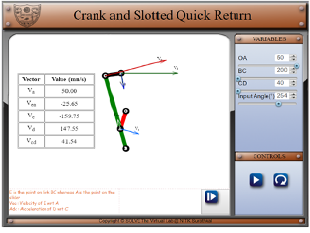

OBJECTIVE:
After completing the experiments on kinematics of crank and slotted mechanism
- Students will be comfortable with working with basic six link mechanisms
- Students will be able to perform position, velocity and acceleration analysis on the crank and slotted mechanism.
Prerequisites
- Knowledge of kinematic analysis of a 4 bar mechanism
- Knowledge of various kinds of links.
- Knowledge of velocity and acceleration analysis
THEORY
The crank and slotted quick return mechanism converts rotatory motion into linear motion. It is extensively used in shaping and cutting machines and is particularly useful in cutting flat surfaces out of metal stock. The return stroke of the ram is faster than the advancing stroke. The mechanism consists of an arm attached to a rotating disc that moves at a controlled uniform speed. Unlike the crank, the arm of the mechanism runs at a different rate than the disc. By having the disc run at a different rate than the attached arm, productivity increases because the amount of time needed for a cut is reduced.
The crank and slotted quick return mechanism was invented by Whitworth in the 1800s. It played an active role in increasing productivity by reducing cutting times in shaping machines.
Applications
As a quick return mechanism it finds applications in various fields. Its quick return action is used in shaping machines to reduce the total process time while its controlled forward action is used to give clean and defined cuts necessary for shaping. It also finds application in shaping machines, slotting machines, rotary internal combustion engines.
Ref:
Mathematical Model
Fig 3
r1 = length of crank OA
r2 = length of the arm BC
r3 = length of ram arm CD
r4 = Distance between the centre of rotation of the crank and the line on which the ram oscillates
r5 = Length between centres of rotation O and B
l = Variable distance between point A and B
Using vector loop formulation we get the following equations for all of the position, velocity and acceleration components of the mechanism
Position Analysis
Velocity Analysis:

Acceleration Analysis:
Since there is a sliding link on a rotating arm, a Coriolis component of acceleration is present:

- Based on the geometry of the mechanism the position analysis of the mechanism is performed. Vector loop formulation is used here.
- Based the position analysis the vector loops obtained in the position analysis are differentiated to get velocity loops for each link.
- The velocity analysis is further used to calculate the necessary forces in the acceleration analysis. Due to the presence of a simultaneous sliding and rotating member the Coriolis and slip components of acceleration of that link are also calculated.
- These values are tabulated for the user.
Simulation
Velocity Mode

In this mode each individual link length can be varied along with the angular velocity of the crank. The user can see the relationship between the change of these variables and the change in the velocity profiles of each link.
Each of the velocity vectors are placed on the mechanism itself to enable he user to get an intuitive understanding of the velocities involved in the mechanism and their relative scales.
The simulation works in two modes.
- Run mode
Here the simulation runs continuously and the change in velocities and velocity vectors is dynamically portrayed in this mode. The user is able to change the lengths of various links and the angular velocity of the crank. - Pause mode
Here the simulation is static and the user is able to change the angle of the crank manually using the slider with a resolution of 1 degree. The corresponding velocities and velocity vectors change with the state of the mechanism. The user can take advantage of this mode to inspect the velocity vectors and their numerical values. The user is also able to change the values of the link lengths
Acceleration Analysis
In this mode each individual link length can be varied along with the angular velocity of the crank. The user can see the relationship between the change of these variables and the change in the acceleration profiles of each link.
Each of the velocity vectors are placed on the mechanism itself to enable he user to get an intuitive understanding of the accelerations involved in the mechanism and their relative scales.
The simulation works in two modes.
- Run mode
Here the simulation runs continuously and the change in accelerations and acceleration vectors is dynamically portrayed in this mode. The user is able to change the lengths of various links and the angular velocity of the crank. - Pause mode
Here the simulation is static and the user is able to change the angle of the crank manually using the slider with a resolution of 1 degree. The corresponding accelerations and acceleration vectors change with the state of the mechanism. The user can take advantage of this mode to inspect the velocity vectors and their numerical values. The user is also able to change the values of the link lengths.
Navigation between the modes can be done using the arrows in the bottom and the simulation can be paused and played with the pause and play buttons found in the bottom right as well.


-
Robert L Norton (2011), Design of Machinery (5th Ed.), McGraw Hill Publication
Uicker J.J., Pennock G.R. and Shigley J.E. (2009), Theory of Machines and Mechanisms (3rd Ed.), Oxford University Press
S S Rattan (2014), Theory of Machines (4th Ed.), McGraw Hill Education (India) Private Limited